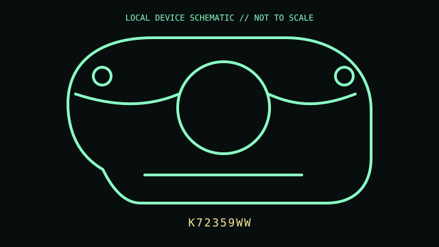

[ MICE AND TRACKBALLS // IDENTIFIED COMPONENT ]
Kensington Expert Mouse Wireless Trackball
Ambidextrous stationary trackball with a large ball, surrounding scroll ring, and detachable wrist rest.

MODEL IDENTIFICATION: Manufacturer identity: K72359WW. Compare the unit label, regional suffix, and revision against the manufacturer's manual before repair or compatibility claims.
Model specifications
| Catalog subcategory | Mice and trackballs |
|---|---|
| Exact model / ID | K72359WW |
| Model-specific features | Optical trackball; four programmable buttons and scroll ring; wireless 2.4 GHz nano receiver or Bluetooth LE; two AA batteries; large 55 mm ball. |
| Interface and host support | Host input uses either the USB receiver or Bluetooth LE. KensingtonWorks customization is separate software; base pointer behavior and programmable controls depend on host support. |
| Revision / driver caveat | Verify K72359WW on the base; similar Expert Mouse wired and wireless versions use different connections. Pairing and KensingtonWorks support vary by OS version. |
Preservation and service notes
Lift the ball for access to the tracking contacts and clean them with a lint-free swab; do not apply oil. Preserve the receiver and wrist rest, and remove AA cells for long-term storage.
Record the as-found label, accessories, host OS, driver/firmware version, and test method. Separate observed condition from published specifications; do not treat family-level feature claims as proof of a unit's revision.
Primary manufacturer documentation
- Kensington product search — K72359WWManufacturer search portal for product-specific records; confirm the unit's printed model number.
- KensingtonWorks supportManufacturer software and host-support information.
Manufacturer pages may change or retire. Preserve a copy of the applicable manual and note its revision when documenting a physical unit.